EcoLact / Guía de desarrollo
Backend Laravel 13
El backend atiende la interfaz web y la API móvil. El procedimiento parte de una copia nueva y una base de desarrollo: instala bibliotecas, configura el entorno y levanta los procesos necesarios.
Paso 1. Instalar dependencias
Desde la raíz de EcoLact, entra al proyecto PHP. Composer resuelve el autoload y las bibliotecas que necesita Laravel.
cd EcoLactWeb
composer install
composer check-platform-reqs
Qué hace: cd cambia el directorio; install usa composer.lock cuando existe. La comprobación contrasta PHP y extensiones con los paquetes instalados.
Resultado esperado: Se crea vendor/ y los requisitos de plataforma se cumplen.
Comprobación: Comprueba vendor/autoload.php y revisa que Composer no indique extensiones o versiones incompatibles.
Dependencias del backend

Archivo: backend-dependencias.png
Qué debe mostrar: La finalización de composer install y la comprobación de requisitos PHP.
Herramienta: PowerShell.
Paso 2. Crear el entorno local
La plantilla contiene nombres y valores de ejemplo. Cópiala solo si .env no existe; si ya existe, revisa la configuración propia sin sobrescribirla. Genera la clave únicamente para una instalación nueva.
if (-not (Test-Path .env)) { Copy-Item .env.example .env }
# Solo en una instalación nueva, sin APP_KEY configurada:
php artisan key:generate
Qué hace: La copia prepara las variables locales; key:generate establece la clave criptográfica usada por Laravel. No es la contraseña de MySQL ni un token de Sanctum.
Resultado esperado: Existe .env y APP_KEY tiene un valor generado localmente.
Comprobación: Comprueba su presencia en el editor sin mostrarla en capturas. No regeneres una clave de un entorno en uso: puede invalidar información cifrada.
.env está ignorado por Git en EcoLactWeb. Configura credenciales propias y no lo compartas; la guía solo muestra valores ficticios. Verifica también APP_ENV=local y usa APP_DEBUG=true exclusivamente en desarrollo.
Paso 3. Preparar la conexión MySQL
Inicia MySQL y crea una base vacía de desarrollo siguiendo Base de datos. Después ajusta estas variables en .env; sustituye los valores ficticios.
DB_CONNECTION=mysql
DB_HOST=127.0.0.1
DB_PORT=3306
DB_DATABASE=ecolactv1
DB_USERNAME=usuario_local
DB_PASSWORD=valor_privado
Qué hace: DB_CONNECTION selecciona el motor; host, puerto y nombre identifican el servicio y el esquema. Usuario y contraseña pertenecen a tu instalación.
Resultado esperado: Laravel apunta a la base ecolactv1 del entorno elegido.
Comprobación: Confirma en el cliente MySQL el servidor y esquema seleccionados antes de migrar. Si había configuración cacheada, ejecuta php artisan config:clear.
Paso 4. Aplicar migraciones
Con la conexión confirmada, crea o actualiza la estructura versionada. Estas órdenes se ejecutan desde EcoLactWeb.
php artisan config:clear
php artisan migrate
php artisan migrate:status
Qué hace: config:clear descarta configuración cacheada; migrate aplica migraciones pendientes y status lista su estado.
Resultado esperado: Las migraciones de esta revisión figuran aplicadas.
Comprobación: Revisa migrate:status y las tablas en MySQL. Si hay un fallo, identifica la migración y causa antes de repetir; no borres la base para ocultarlo.
Paso 5. Cargar datos iniciales
Revisa DatabaseSeeder y configura ECOLACT_ADMIN_USERNAME y ECOLACT_ADMIN_PASSWORD con valores locales propios antes de continuar. Los seeders no representan una carga completa de datos operativos.
php artisan db:seed
Qué hace: Invoca los siete seeders registrados: roles, administrador, parámetros de calidad, precio de leche, reglas de pago, zonas y delimitaciones iniciales.
Resultado esperado: Los catálogos y el usuario inicial están disponibles.
Comprobación: Consulta las tablas de catálogo y prueba el acceso con tus credenciales. Revisa el comportamiento de actualización descrito en Base de datos.
Reejecutar seeders modifica datos. AdminUserSeeder usa updateOrInsert y vuelve a escribir la contraseña del usuario elegido; también activa el cambio obligatorio de contraseña. No ejecutes db:seed indiscriminadamente en una base compartida.
Paso 6. Iniciar Laravel
Abre una terminal en EcoLactWeb y mantenla activa. El servidor de desarrollo atiende rutas web y API.
php artisan serve
Qué hace: Inicia el servidor local; normalmente anuncia http://127.0.0.1:8000. Usa siempre la dirección realmente mostrada.
Resultado esperado: La web responde en el navegador y la terminal permanece ejecutándose.
Comprobación: Abre la dirección anunciada. Si solicita recursos frontend o la página aparece sin estilos, completa el paso de Vite.
Paso 7. Ejecutar Vite
En otra terminal ubicada en EcoLactWeb, instala las dependencias JavaScript y arranca el servidor de recursos.
npm install
npm run dev
Qué hace: install prepara node_modules; dev ejecuta vite según package.json. Vite sirve CSS/JavaScript y recarga cambios; Laravel sigue atendiendo la aplicación.
Resultado esperado: Ambos procesos permanecen activos y la web carga sus recursos.
Comprobación: Recarga la web y comprueba en las herramientas del navegador que CSS y JavaScript no fallan. La terminal de Vite anuncia su propio puerto.


Comandos de referencia
| Comando | ¿Para qué sirve? |
|---|---|
cd EcoLactWeb |
Entrar al proyecto PHP desde la raíz. |
composer install |
Instalar las dependencias PHP bloqueadas. |
Copy-Item .env.example .env |
Crear la configuración inicial, solo si .env no existe. |
php artisan key:generate |
Generar APP_KEY en una instalación nueva. |
php artisan migrate |
Aplicar cambios de estructura pendientes. |
php artisan db:seed |
Ejecutar los seeders registrados y sus actualizaciones. |
php artisan serve |
Atender la aplicación en desarrollo. |
npm install |
Instalar dependencias frontend. |
npm run dev |
Iniciar Vite y su recarga de recursos. |
npm run build |
Generar los recursos compilados, sin dejar Vite activo. |
composer run dev |
Alternativa definida en composer.json: coordina servidor, queue:listen y Vite. No usar simultáneamente con los procesos ya iniciados. |
El script composer run setup existe, pero encadena generación de clave y migraciones con --force. Para la primera configuración se documentan los pasos separados, de modo que puedas revisar el entorno antes de modificarlo.
Errores frecuentes y comprobaciones
| Situación | Qué comprobar |
|---|---|
| Composer no reconocido | Revisa instalación y PATH; abre otra terminal y ejecuta composer --version. |
| Base no disponible | Comprueba servicio, host, puerto, usuario y existencia del esquema; no confundir MySQL con el servidor web. |
| Falta .env | Crea la copia inicial y APP_KEY. Si ya existe, no lo reemplaces para resolver otro error. |
| Recursos frontend faltantes | Ejecuta npm install y npm run dev desde EcoLactWeb, o genera npm run build. |
| Puerto ocupado | Identifica el proceso o usa php artisan serve --port=8001. Actualiza la URL móvil para ese puerto. |
| PHP incompatible o extensiones ausentes | Revisa el PHP de la terminal y composer check-platform-reqs. La conexión MySQL necesita pdo_mysql; el preprocesado OCR usa GD. |
Servidores de desarrollo

Archivo: backend-servidor.png
Qué debe mostrar: Laravel y Vite ejecutándose en terminales separadas y sus direcciones locales.
Herramienta: Terminales de VS Code.
Fuentes verificables del repositorio
- EcoLactWeb/composer.json
- EcoLactWeb/composer.lock
- EcoLactWeb/package.json
- EcoLactWeb/.env.example
- EcoLactWeb/.gitignore
- EcoLactWeb/config/database.php
- EcoLactWeb/database/seeders/DatabaseSeeder.php
- EcoLactWeb/database/seeders/AdminUserSeeder.php
Revisión de referencia: 75901337489d. Los procedimientos se contrastaron con estas fuentes; los comandos de instalación, migración y compilación del producto no se ejecutaron para elaborar esta guía.